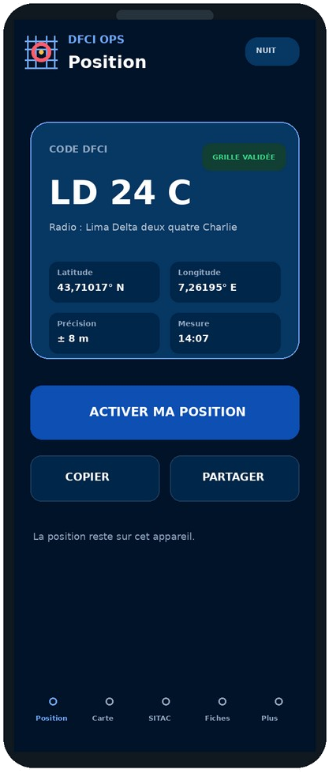
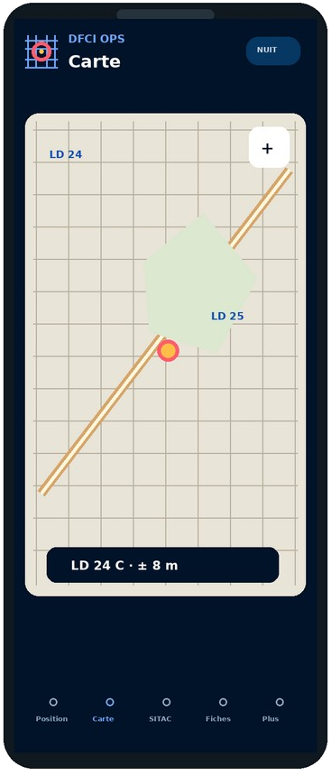
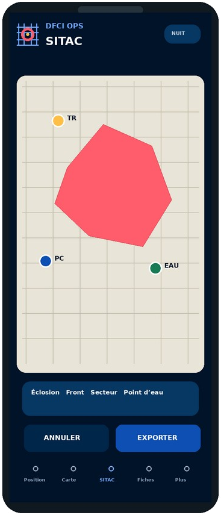
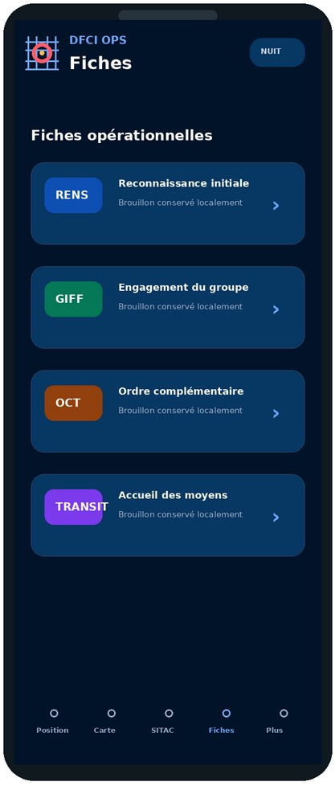

L'application terrain de localisation DFCI et de cartographie opérationnelle
DFCI OPS réduit le temps entre la localisation, la compréhension de la situation et sa transmission.
Sur le terrain, tout commence par une question : « où ? »
Une localisation radio exige un code court, fiable et immédiatement lisible.
- La lecture d'une carte papier prend du temps.
- La couverture mobile est souvent dégradée.
- Une incertitude GPS mal présentée peut induire en erreur.
- Les informations se dispersent entre cartes, notes et messageries.
Un poste cartographique tactique léger, accessible depuis n'importe quel appareil.
- Position GPS convertie localement en code DFCI.
- Recherche inverse et ouverture de l'itinéraire.
- SITAC, fiches et missions regroupées au même endroit.
- Exports et partages déclenchés volontairement.
Chaque étape se fait dans la même application, sur le même fond de carte et avec le même repère DFCI — sans ressaisie, sans changer d'outil.
Le code DFCI, immédiatement exploitable
Une interface pensée pour une lecture rapide, la transmission radio et les conditions dégradées.

Un résultat lisible, qualifié et prêt à être annoncé.
Un code invalide n'est jamais corrigé silencieusement. Une situation incertaine est signalée comme telle.
De la carte IGN à la situation tactique
La carte reste un support de représentation : la décision appartient au commandement.


Lire le terrain et rejoindre un point
- Fonds IGN plan et photographie aérienne.
- Grille DFCI superposée, étiquettes adaptées au zoom.
- Position et code conservés sur fond neutre si le fond distant tombe.
- Mode jour et mode nuit.
Construire et mettre à jour la situation
- Points, lignes et polygones opérationnels.
- Édition des tracés : déplacer, insérer ou supprimer un sommet.
- Annuler / rétablir et sauvegarde automatique.
- Export image avec légende, échelle et horodatage.
L'interface est dimensionnée pour l'usage avec des gants : zones tactiles larges, sélection tolérante, aucun geste complexe obligatoire.
Une intervention, une mission, une trace cohérente
Les données restent locales ; le partage intervient uniquement à la demande de l'utilisateur.
GIFF, RENS, OCT et Transit

Le hors-ligne n'est pas un mode dégradé
Après la première ouverture, l'application entière reste disponible sans aucune couverture mobile.
- Conversion GPS → code DFCI, sans aucun appel réseau.
- Recherche inverse d'un code entendu à la radio.
- SITAC : création, édition, annuler/rétablir, sauvegarde.
- Fiches, brouillons et cycle de mission complet.
- Export image de la SITAC et partages natifs.
- Chargement de nouvelles tuiles IGN non encore consultées.
- Calcul d'itinéraire par l'application de navigation externe.
Un bandeau signale le mode hors-ligne. Les données locales ne sont jamais bloquées : la carte bascule sur un fond neutre et conserve la grille, la position et les objets.
La confiance opérationnelle se démontre
DFCI OPS qualifie ses résultats, expose ses limites et privilégie le traitement local.
Ce que DFCI OPS n'est pas
- Un outil de prédiction scientifique du comportement du feu.
- Un remplacement de la reconnaissance terrain ou de l'appréciation du COS.
- Un système de suivi automatique des personnels.
- Un dispositif d'alerte ou d'engagement de moyens.
DFCI OPS aide à se représenter la situation et à la transmettre. La décision reste au commandement.
Un même repère, des usages adaptés au rôle
Testez DFCI OPS sur le terrain.
Aucune inscription requise. Ouvrez l'application, autorisez la position et obtenez immédiatement votre code DFCI.
Sources et attributions
Carroyage DFCI 2 km — jeu de données officiel diffusé sur data.gouv.fr sous Licence Ouverte 2.0 (Etalab) ; version du jeu affichée dans l'application. Fonds cartographiques : © IGN — Géoplateforme. DFCI OPS est édité par Orionis Solutions ; l'éditeur responsable et les mentions d'usage figurent dans l'application et sur chaque export.